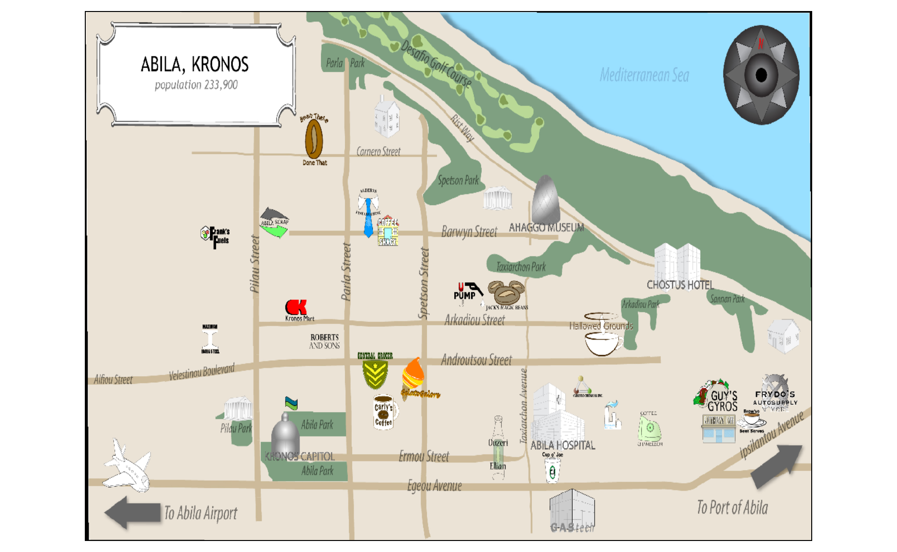
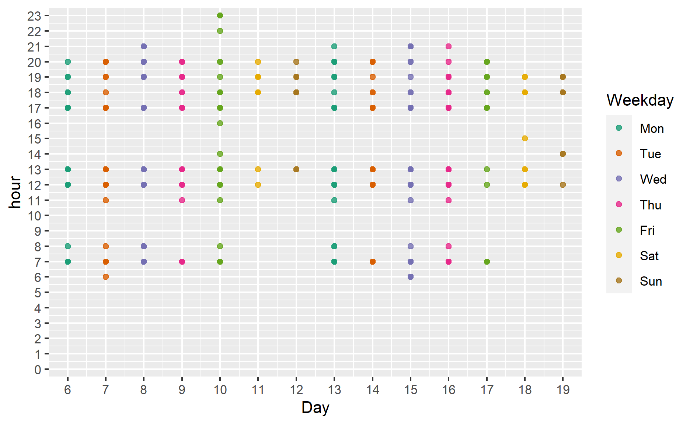

Getting Started
Installing and Launching R Packages
The code chunk below will check if the R packages have been installed, if not, R will install the missing R packages before launching them.
packages = c('ggiraph','raster','sf','tmap','clock','gifski','tidyverse','lubridate','DT',"lobstr","plotly","distill","patchwork","hms","viridis")
for(p in packages){
if(!require(p,character.only = T)){
install.packages(p)
}
library(p,character.only = T)
}
Importing Data
This code chunk import cc_data.csv into R by using read_csv() of readr package.
cc_data <-read_csv("data/cc_data.csv",locale = locale(encoding = 'windows-1250'))
loyalty_data<-read_csv("data/loyalty_data.csv",locale = locale(encoding = 'windows-1250'))
car_assignment_data<-read_csv("data/car-assignments.csv")
gps_data<-read_csv("data/gps.csv")
Data Preparation
Transforming data for cc_data.csv
cc_data$timestamp <- date_time_parse(cc_data$timestamp,
zone = "",
format = "%m/%d/%Y %H:%M")
cc_data$last4ccnum <- as.character(cc_data$last4ccnum)
cc_data$Day = get_day(cc_data$timestamp)
cc_data$Hour = get_hour(cc_data$timestamp)
cc_data$Min = get_minute(cc_data$timestamp)
cc_data$Weekday = wday(cc_data$timestamp,
label = TRUE,
abbr = TRUE,
week_start = getOption("lubridate.week.start",1))
cc_data$Time = format(cc_data$timestamp, format = "%H:%M:%S")
cc_data$Time = as.hms(cc_data$Time)
Transforming data for loyalty_data.csv
loyalty_data$timestamp<- date_parse(loyalty_data$timestamp,
format = "%m/%d/%Y")
loyalty_data$loyaltynum <- as.character(loyalty_data$loyaltynum)
loyalty_data$Day = get_day(loyalty_data$timestamp)
loyalty_data$Weekday = wday(loyalty_data$timestamp,
label = TRUE,
abbr = TRUE,
week_start = getOption("lubridate.week.start",1))
Transforming data for gps_data.csv
gps_data$Timestamp<-date_time_parse(gps_data$Timestamp,
zone = "",
format="%m/%d/%Y %H:%M:%S")
gps_data$id<-as_factor(gps_data$id)
gps_data$Day = get_day(gps_data$Timestamp)
gps_data$Hour = get_hour(gps_data$Timestamp)
gps_data$Min = get_minute(gps_data$Timestamp)
gps_data$Sec = get_second(gps_data$Timestamp)
gps_data$Weekday = wday(gps_data$Timestamp,
label = TRUE,
abbr = TRUE,
week_start = getOption("lubridate.week.start",1))
gps_data$Time = format(gps_data$Timestamp, format = "%H:%M:%S")
gps_data$Time = as.hms(gps_data$Time)
Transforming data for car-assignments.csv
car_assignment_data$CarID<-as.factor(car_assignment_data$CarID)
Joining GPS Data and Car Assignment Data using CarID
Setting up the tourist map
bgmap<-raster("data/Geospatial/MC2-tourist.tif")
bgmap
class : RasterLayer
band : 1 (of 3 bands)
dimensions : 1595, 2706, 4316070 (nrow, ncol, ncell)
resolution : 3.16216e-05, 3.16216e-05 (x, y)
extent : 24.82419, 24.90976, 36.04499, 36.09543 (xmin, xmax, ymin, ymax)
crs : +proj=longlat +datum=WGS84 +no_defs
source : MC2-tourist.tif
names : MC2.tourist
values : 0, 255 (min, max)tmap_mode("plot")
tm_shape(bgmap) +
tm_raster(bgmap,
legend.show = FALSE)
tm_shape(bgmap) +
tm_rgb(bgmap, r =1,g=2,b=3,
alpha=NA,
saturation = 1,
interpolate = TRUE,
max.value=255)

Abila_st<-st_read(dsn="data/Geospatial",layer="Abila")
Reading layer `Abila' from data source
`C:\danielsng07\Assignment\data\Geospatial' using driver `ESRI Shapefile'
Simple feature collection with 3290 features and 9 fields
Geometry type: LINESTRING
Dimension: XY
Bounding box: xmin: 24.82401 ymin: 36.04502 xmax: 24.90997 ymax: 36.09492
Geodetic CRS: WGS 84Creating the stop time and duration of during the stop time for all cars
Task 2
With the addition of Vehicle data to the credit and loyalty card data, does your assessment of the anomalies in question 1 change?
The vehicle data have its limitation where there is only Latitude and Longitude of the car movement are provided in the data. We will have to track each vehicle manually to find out where the car move to by plotting out the car movement in the tourist map over the two weeks. We will have to use the vechicle stop time and duration to understand the behaviour of the car movement. This is often a tedious process as there are a total of 35 cars ID and 5 trucks ID moving around the different part of the map. We also found out where the cars with assigned employees (Car ID 1 to 35) stay from the first movement of the car at the start of each day. Based on some key observations from the vehicle movement, we can identify potential informal or unofficial relationships among GASTech personnel.
To investigate the driving patterns of all vehicles (CarID 1 to 35,101,104,105,106,107 ) from 6 Jan 2014 to 19 Jan 2014
Understanding the drivers travelling patterns
We scanned through all the cars and trucks movement over the 2 weeks and found some abnormal behaviour of some car movement.
Major findings 1 (Employees in the security department that have weird movement in the early morning)
Security_Movement<-CarMovement%>%
filter(CurrentEmploymentType=="Security")%>%
arrange(Day)%>%
filter(stopduration>1)%>%
select(Timestamp,id, Name,CurrentEmploymentType, CurrentEmploymentTitle,Day, Weekday,Hour,Time,VehicleStopTime,stopduration)
ggplot(Security_Movement,aes(x=Day,y=Hour,color=Weekday))+geom_point(alpha = 0.8)+ expand_limits(x=6) + scale_x_continuous("Day",limits = c(6,19), breaks = seq(6,19,1),expand = c(0,0.5)) + scale_y_continuous("hour",limits = c(0,23), breaks = seq(0,23,1),expand = c(0,0.5))+ scale_color_brewer(palette = "Dark2")
During those day in the early morning, some of the security employees drive to the home area of CFO Ingrid Barranco (CarID 4), CIO Ada Campo-Corrente (CarID 10) and Willem Vasco-Pais (CarID 35) who is the Environmental Safety Advisor.
SecuritySuspiciousTime<-CarMovement %>%
filter(Timestamp > "2014-01-07 01:00:00" & Timestamp <="2014-01-07 04:00:00" )
gps_sf<-st_as_sf(SecuritySuspiciousTime,
coords=c("long","lat"),
crs=4326)
gps_path<-gps_sf %>%
group_by(id) %>%
summarize(m=mean(Timestamp),
do_union=FALSE) %>%
st_cast("LINESTRING")
overplot the gps path of driver ID onto the background tourist map.
They returned again on 9 Jan in the odd early hour of the day.
SecuritySuspiciousTime<-CarMovement %>%
filter(Timestamp > "2014-01-09 02:00:00" & Timestamp <="2014-01-09 04:00:00" )
gps_sf<-st_as_sf(SecuritySuspiciousTime,
coords=c("long","lat"),
crs=4326)
gps_path<-gps_sf %>%
group_by(id) %>%
summarize(m=mean(Timestamp),
do_union=FALSE) %>%
st_cast("LINESTRING")
overplot the gps path of driver ID onto the background tourist map.
They act again on 11 Jan and subsequently on 14 Jan too.
SecuritySuspiciousTime<-CarMovement %>%
filter(Timestamp > "2014-01-11 02:00:00" & Timestamp <="2014-01-11 04:00:00" )
gps_sf<-st_as_sf(SecuritySuspiciousTime,
coords=c("long","lat"),
crs=4326)
gps_path<-gps_sf %>%
group_by(id) %>%
summarize(m=mean(Timestamp),
do_union=FALSE) %>%
st_cast("LINESTRING")
overplot the gps path of driver ID onto the background tourist map.
CarID 15,16,21,24 are all from the security department, they are Isia Yann, Hennie Osvaldo, Loreto Bodrogi and Minke Mies. They set off from the same place and these 4 drivers stayed at the same place. They are highly suspicious in their actions.
Major Findings 2 : All employees in the Information Technology Department work during normal hours the exception of CarID 1 which is assigned to Nils Calixto
ITDepart<-CarMovement%>%
filter(CurrentEmploymentType %in% c("Information Technology"),id!=1)%>%
arrange(Day)%>%
filter(stopduration>1)%>%
select(Timestamp,id, Name,CurrentEmploymentType, CurrentEmploymentTitle,Day, Weekday,Hour,Time,VehicleStopTime,stopduration)
ggplot(ITDepart,aes(x=Day,y=Hour,color=Weekday))+geom_point(alpha = 0.8)+ expand_limits(x=6) + scale_x_continuous("Day",limits = c(6,19), breaks = seq(6,19,1),expand = c(0,0.5)) + scale_y_continuous("hour",limits = c(0,23), breaks = seq(0,23,1),expand = c(0,0.5))+ scale_color_brewer(palette = "Dark2")

ITDepart<-CarMovement%>%
filter(id==1)%>%
arrange(Day)%>%
filter(stopduration>1)%>%
select(Timestamp,id, Name,CurrentEmploymentType, CurrentEmploymentTitle,Day, Weekday,Hour,Time,VehicleStopTime,stopduration)
ggplot(ITDepart,aes(x=Day,y=Hour,color=Weekday))+geom_point(alpha = 0.8)+ expand_limits(x=6) + scale_x_continuous("Day",limits = c(6,19), breaks = seq(6,19,1),expand = c(0,0.5)) + scale_y_continuous("hour",limits = c(0,23), breaks = seq(0,23,1),expand = c(0,0.5))+ scale_color_brewer(palette = "Dark2")
Nils Calixto have car movement during the early hours of the day and we found that he returned to office during these time.
Car1SuspiciousTime<-CarMovement %>%
filter(Timestamp > "2014-01-06 22:00:00" & Timestamp <="2014-01-07 03:00:00")
gps_sf<-st_as_sf(Car1SuspiciousTime,
coords=c("long","lat"),
crs=4326)
gps_path<-gps_sf %>%
group_by(id) %>%
summarize(m=mean(Timestamp),
do_union=FALSE) %>%
st_cast("LINESTRING")
overplot the gps path of driver ID onto the background tourist map.
He went back to office again on 8 Jan and stay on till early morning of 9 Jan.
Car1SuspiciousTime<-CarMovement %>%
filter(Timestamp > "2014-01-08 21:00:00" & Timestamp <="2014-01-09 04:00:00")
gps_sf<-st_as_sf(Car1SuspiciousTime,
coords=c("long","lat"),
crs=4326)
gps_path<-gps_sf %>%
group_by(id) %>%
summarize(m=mean(Timestamp),
do_union=FALSE) %>%
st_cast("LINESTRING")
overplot the gps path of driver ID onto the background tourist map.
Nils Calixto is showing abnormal activities on returning to office at abnormal time as compared to his colleagues from the same department. It is unknown on what he is doing in office.
Major findings 3 (Two employees visited Chostus Hotel during weekday afternoon several times during the two weeks)
It is found that CarID7 Elsa Orilla and CarID 33 Brand Tempestad visited Chostus Hotel several times during weekday afternoon before returning to office.
HotelSuspiciousTime<-CarMovement %>%
filter(Timestamp > "2014-01-08 11:00:00" & Timestamp <="2014-01-08 14:00:00" )
gps_sf<-st_as_sf(HotelSuspiciousTime,
coords=c("long","lat"),
crs=4326)
gps_path<-gps_sf %>%
group_by(id) %>%
summarize(m=mean(Timestamp),
do_union=FALSE) %>%
st_cast("LINESTRING")
overplot the gps path of driver ID onto the background tourist map.
They went to Chostus Hotel on 8 Jan afternoon. The same travelling pattern is repeated again on 10 Jan afternoon.
HotelSuspiciousTime<-CarMovement %>%
filter(Timestamp > "2014-01-10 11:00:00" & Timestamp <="2014-01-10 14:00:00" )
gps_sf<-st_as_sf(HotelSuspiciousTime,
coords=c("long","lat"),
crs=4326)
gps_path<-gps_sf %>%
group_by(id) %>%
summarize(m=mean(Timestamp),
do_union=FALSE) %>%
st_cast("LINESTRING")
overplot the gps path of driver ID onto the background tourist map.
In addition, they both went to Chostus Hotel on 2 more afternoon which is on 14 Jan and 17 Jan.A total of 4 trips together, it is unknown on their relationship.
Major findings 4 (10 Jan (Friday) evening gathering with 10 GAStech Employees involved)
The locations these employees went to seems to be either Lars Azada (CarID2) and Axel Calzas home along Carnero Street. The employees involved in this gathering are Nils Calixto (CarID1), Felix Balas(CarID3),Isak Baza (CarID5), Linnea Bergen (CarID6,) Elsa Orilla (CarID7), Lidelse Dedos (CarID14), Birgitta Frente (CarID18), Vira Frente (CarID19), Kanon Herrero (CarID25) and Marin Onda (CarID26).
GatheringSuspiciousTime<-CarMovement %>%
filter(Timestamp > "2014-01-10 19:00:00" & Timestamp <="2014-01-10 23:59:00" )
gps_sf<-st_as_sf(GatheringSuspiciousTime,
coords=c("long","lat"),
crs=4326)
gps_path<-gps_sf %>%
group_by(id) %>%
summarize(m=mean(Timestamp),
do_union=FALSE) %>%
st_cast("LINESTRING")
overplot the gps path of driver ID onto the background tourist map.

These employee involved in this gathering are from only two department, 3 from Information Technology and 7 from Engineering department.
# A tibble: 2 x 2
CurrentEmploymentType n
<chr> <int>
1 Engineering 7
2 Information Technology 3Major findings 5 (Weekend golf gathering among the executives)
gps_sf<-st_as_sf(GolfSuspiciousTime,
coords=c("long","lat"),
crs=4326)
gps_path<-gps_sf %>%
group_by(id) %>%
summarize(m=mean(Timestamp),
do_union=FALSE) %>%
st_cast("LINESTRING")
overplot the gps path of driver ID onto the background tourist map.

Desafio Golf Course are only visited by GAStech executives.However the vehicle data for CarID31 which is assigned to Sten Sanjorge (CEO), only show up on 17, 18 and 19 Jan.His location at the start of each day is from Chostus Hotel. We suspect he is only visiting the company during this short stay.
CEO<-CarMovement%>%
filter(id==31)%>%
arrange(Day)%>%
filter(stopduration>1)%>%
select(Timestamp,id, Name,CurrentEmploymentType, CurrentEmploymentTitle,Day, Weekday,Hour,Time,VehicleStopTime,stopduration)
ggplot(CEO,aes(x=Day,y=Hour,color=Weekday))+geom_point(alpha = 0.8)+ expand_limits(x=6) + scale_x_continuous("Day",limits = c(6,19), breaks = seq(6,19,1),expand = c(0,0.5)) + scale_y_continuous("hour",limits = c(0,23), breaks = seq(0,23,1),expand = c(0,0.5))+ scale_color_brewer(palette = "Dark2")

CEOatHotel<-CarMovement %>%
filter(Timestamp > "2014-01-17 06:00:00" & Timestamp <="2014-01-17 08:00:00" )
gps_sf<-st_as_sf(CEOatHotel,
coords=c("long","lat"),
crs=4326)
gps_path<-gps_sf %>%
group_by(id) %>%
summarize(m=mean(Timestamp),
do_union=FALSE) %>%
st_cast("LINESTRING")
overplot the gps path of driver ID onto the background tourist map.
The location he set off is from Chostus Hotel at the start of the day.
Major findings 6 (the company truck only move on weekday and goes to specific locations)
The company vehicles which are meant for business uses only goes to specific location such as Abila Airport, Abila Scrap and Abila Port, Maximum Iron and Steel. The only anomaly is that truck 105 only goes to Katerinas Caf.
TruckMovement<-CarMovement%>%
filter(id %in% c("101","104","105","106","107"))%>%
arrange(Day)%>%
filter(stopduration>1)%>%
select(Timestamp,id, Name,CurrentEmploymentType, CurrentEmploymentTitle,Day, Weekday,Hour,Time,VehicleStopTime,stopduration)
ggplot(TruckMovement,aes(x=Day,y=Hour,color=Weekday))+geom_point(alpha = 0.8)+ expand_limits(x=6) + scale_x_continuous("Day",limits = c(6,19), breaks = seq(6,19,1),expand = c(0,0.5)) + scale_y_continuous("hour",limits = c(0,23), breaks = seq(0,23,1),expand = c(0,0.5))+ scale_color_brewer(palette = "Dark2")
gps_sf<-st_as_sf(TruckMovement,
coords=c("long","lat"),
crs=4326)
gps_path<-gps_sf %>%
group_by(id) %>%
summarize(m=mean(Timestamp),
do_union=FALSE) %>%
st_cast("LINESTRING")
overplot the gps path of driver ID onto the background tourist map.

Truck105 only goes to Katerinas Caf
gps_sf<-st_as_sf(TruckMovement,
coords=c("long","lat"),
crs=4326)
gps_path<-gps_sf %>%
group_by(id) %>%
summarize(m=mean(Timestamp),
do_union=FALSE) %>%
st_cast("LINESTRING")
overplot the gps path of driver ID onto the background tourist map.
It is very strange that the truck 105 movement differ from the other truck.
Major findings 7 (Kronos Capitol)
There are 5 cars that visit Kronos Capitol over weekend. This location looks to be a government office as there is a flag over the building. These cars are assigned to Loreto Bodrogi (CarID15), Adra Nubarron (CarID22), Kanon Herrero (CarID25), Edvard Vann (CarID34) and Willem Vasco-Pais (CarID35).
gps_sf<-st_as_sf(TruckMovement,
coords=c("long","lat"),
crs=4326)
gps_path<-gps_sf %>%
group_by(id) %>%
summarize(m=mean(Timestamp),
do_union=FALSE) %>%
st_cast("LINESTRING")
overplot the gps path of driver ID onto the background tourist map.

Summary of findings
Using the GPS data, we can identify place of interest or suspicious behaviours of the employees. USing the place of interest which employees visited together to identify their relationship. They could be close friends which they hang out together.
The employees (Isia Yann, Hennie Osvaldo, Loreto Bodrogi and Minke Mies) from Security department which spy at CFO and CIO home during the early hours are suspects. From the location they set off everyday, it can be concluded that they are staying together. They took turns to go to CFO and CIO home and it is unsure on what they are doing for going there in those hours.
Nils Calixto from Information Technology return to office during the odd early hours on a few occasions. His behaviour is suspicious as there are no employee who return to office at those hours during this two weeks. He is the only person who have done so.
Discrepancies of the vehicle, credit card and loyalty card data
- There are vehicle data which show erroneous GPS records.
For example, in the case of CarID28, we cannot infer where the car is going to or where the car set off everyday.
Car28mov<-CarMovement %>%
filter(id == 28)
gps_sf<-st_as_sf(Car28mov,
coords=c("long","lat"),
crs=4326)
gps_path<-gps_sf %>%
group_by(id) %>%
summarize(m=mean(Timestamp),
do_union=FALSE) %>%
st_cast("LINESTRING")
overplot the gps path of driver ID onto the background tourist map.
CarID28 have a driving path that are very messy. We couldnt identify where the car is moving to most of the time.
- Some of the locations that the cars goes to in the map have no landmark indicated, it is unknown where this place is.
For example, CarID3 went to a location near Frank Fuel over the weekend but this place is a unknown place.
gps_sf<-st_as_sf(UnknownLoc,
coords=c("long","lat"),
crs=4326)
gps_path<-gps_sf %>%
group_by(id) %>%
summarize(m=mean(Timestamp),
do_union=FALSE) %>%
st_cast("LINESTRING")
overplot the gps path of driver ID onto the background tourist map.
The location near Frank Fuel is unknown.
- It is unknown or not explained on why there is only 3 days records of CEO data.
CEO<-CarMovement%>%
filter(id==31)%>%
arrange(Day)%>%
filter(stopduration>1)%>%
select(Timestamp,id, Name,CurrentEmploymentType, CurrentEmploymentTitle,Day, Weekday,Hour,Time,VehicleStopTime,stopduration)
ggplot(CEO,aes(x=Day,y=Hour,color=Weekday))+geom_point(alpha = 0.8)+ expand_limits(x=6) + scale_x_continuous("Day",limits = c(6,19), breaks = seq(6,19,1),expand = c(0,0.5)) + scale_y_continuous("hour",limits = c(0,23), breaks = seq(0,23,1),expand = c(0,0.5))+ scale_color_brewer(palette = "Dark2")
One of the popular locations (Hippokampos) in the credit card and loyalty card are not found in the map.
There are high spending found in the card transactions record at locations such as Abila Aiport, Maximum Iron and Steel and Abila Scrapyard. However these locations are visited mainly by company trucks and these trucks are not assigned to any employees. There are a total of 9 Truck drivers, hence it is hard to infer who spend at these locations,
Loc_Sales_lc<-loyalty_data %>%
group_by(location)%>%
summarise(Average_Sales = mean(price), Max_Sales = max(price), Min_Sales = min(price), Total_Sales=sum(price))%>%
arrange(desc(Total_Sales)) %>%
print(n = 33)
# A tibble: 33 x 5
location Average_Sales Max_Sales Min_Sales Total_Sales
<chr> <dbl> <dbl> <dbl> <dbl>
1 Abila Airport 2662. 4898. 125. 69205.
2 Nationwide Refinery 1947. 4743. 205. 44791.
3 Carlyle Chemical Inc. 2272. 4984. 228. 43173.
4 Stewart and Sons Fab~ 2284. 4543. 279. 38822.
5 Maximum Iron and Ste~ 2701. 4788. 690. 16208.
6 Kronos Pipe and Irri~ 2270. 3921. 242. 13619.
7 Abila Scrapyard 2371. 4277. 1158. 9482.
8 Frydos Autosupply n'~ 153. 282. 18.9 6443.
9 Albert's Fine Clothi~ 218. 1239. 35.7 5439.
10 Katerinas Caf 27.7 96.4 8.01 5405.
11 Hippokampos 29.2 101. 8.43 4533.
12 Guy's Gyros 26.1 65.2 8.23 3808.
13 Shoppers' Delight 170. 294. 16.8 3052.
14 Ouzeri Elian 29.2 117. 8.32 2451.
15 General Grocer 173. 478. 70.2 2077.
16 Abila Zacharo 27.7 112. 8.16 1970.
17 Kalami Kafenion 28.4 141. 8.64 1872.
18 Gelatogalore 26.1 50.4 8.6 1568.
19 Brew've Been Served 10.9 19.9 3 1520.
20 Kronos Mart 186. 286. 87.7 1488.
21 Chostus Hotel 174. 600 108. 1389.
22 Desafio Golf Course 154. 198. 110. 1234.
23 Roberts and Sons 195. 267. 62.5 1169.
24 Hallowed Grounds 12.0 20.0 3.11 962.
25 Bean There Done That 12.0 19.8 3.92 542.
26 Ahaggo Museum 74.1 120. 26.9 444.
27 Jack's Magical Beans 12.1 19.6 3.36 425.
28 Coffee Cameleon 11.2 20.0 3.14 416.
29 Octavio's Office Sup~ 112. 140. 64.5 335.
30 Brewed Awakenings 10.8 17.7 3.62 313.
31 Frank's Fuel 59 65.3 52.7 118
32 Coffee Shack 11.3 19.2 3.63 102.
33 U-Pump 59.5 59.5 59.5 59.5# A tibble: 9 x 5
LastName FirstName CarID CurrentEmploymentTy~ CurrentEmploymentTit~
<chr> <chr> <fct> <chr> <chr>
1 Hafon Albina <NA> Facilities Truck Driver
2 Hawelon Benito <NA> Facilities Truck Driver
3 Hawelon Claudio <NA> Facilities Truck Driver
4 Mies Henk <NA> Facilities Truck Driver
5 Morlun Valeria <NA> Facilities Truck Driver
6 Morlun Adan <NA> Facilities Truck Driver
7 Morluniau Cecilia <NA> Facilities Truck Driver
8 Nant Irene <NA> Facilities Truck Driver
9 Scozzese Dylan <NA> Facilities Truck Driver